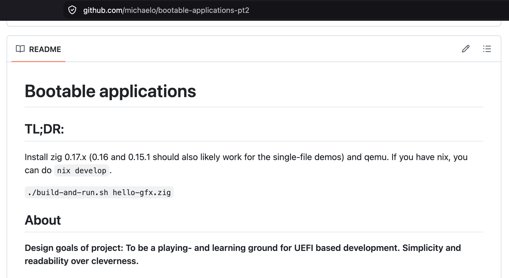

What to expect
(when you're …)
- Michael Odden - independent developer
- Previous talk: https://youtu.be/uW98YqvLeKo
- New this round:
- Deeper look on protocols
- Greater compositions
- Zig - but not important
- Blurring the edges between UEFI and playing around
- Less time spent on tooling
A brief summary of UEFI
- Unified Extensible Firmware Interface
- Late '90s: "EFI" by Intel – BIOS for multiple CPU-architectures
- 2005->: "UEFI" - many contributers and adopters since:
AMD, Apple, ARM, NVIDIA, Cisco, Qualcomm, ++++
- Well specified, quite well supported
- Consists of a basic entrypoint allowing probing system capabilities through structs and function pointers
- "Protocols"
- Simple Text Input
- Simple Text Output
- Graphics Out
- ...
The repository

Design goals
- A playing ground to learn UEFI development
- A (to-be) collection of
- minimal examples to explore single protocols - e.g. plot pixels on screen
- utility functions/wrappers for higher lever functionality - e.g. text rendering
- fully featured games, applications++
- Want contributions!
"He's a developer, he is fallible"
Anathomy of a UEFI application
Architecture
Basic example

Access/probe something useful
Do things!
From code to execution
Tools...
- qemu
- OVMF from EDK II
- zig
- llvm (bundled with zig)
- mtools
Let's throw away some code!
Demo-time
Demo step 1
Demo step 2
Demo step 3
Where to next?
- Expand on protocols? Bluetooth, networking, ...
- Extend on handover to proper OS
- Explore bootability on other devices? Mobile, Apple Silicon, etc
Let me know any thoughts and ideas!
Questions?